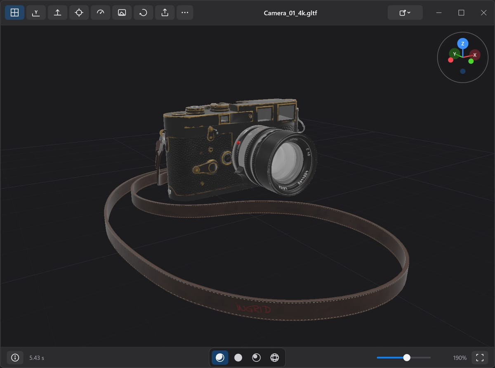

Windows 10/11 · x64

Preview 3D
A fast, secure, and native 3D object viewer for Windows
The collection
Open it, decode it, get on with your day.
Performant MacOS-like archive extraction utility for Windows 11/10
View and explore your JSON, JWT, XML, YAML, protobuf blobs (and more) easily
Look at it. Listen to it. On your machine, not in a browser tab.
A fast, secure, and native 3D object viewer for Windows
VST3/AU/CLAP audio plugin emulating Sega Genesis audio FM synth and PSG chips (YM2612/SN76489)
For people who ship, and for the agents helping them.
One click away, all day.
MacOS menu bar handy calendar
Solutions that do their job well, reasonably tiny code that's been tightly scoped for high value use cases first.
No ads, no telemetry, no data sharing.
Every app is free to download and use, and its full source is public on GitHub. Thoughtful contributions welcome.
Code is carefully reviewed for performance optimizations
FAQ
binbuf is a small collection of free, open-source apps for Windows, macOS, Linux and the web. Each one does a single job, runs on your own machine, and never asks you to sign up.
Yes. Every app is free to download and use, with no accounts, trials or upsells. The source for each project is public on GitHub, and its license — MIT, Apache-2.0 or GPL-3.0 — is stated in the repository.
No. There are no accounts, no analytics and no telemetry, and nothing you open, decode or render is uploaded. Your files and data stay on your own machine.
Each app targets its own platforms — Windows, macOS, Linux or the browser — and lists the exact requirement on its download page.
Most releases are not code-signed yet, so SmartScreen and Gatekeeper add an extra prompt the first time you run one. Each project documents the safe way through in its GitHub repository — usually a SHA-256 checksum on Windows or a one-line Terminal command on macOS. Code signing is on the roadmap.
Yes. Each project keeps its source, build instructions and issue tracker in its own GitHub repository — open the one for the app you are interested in to build it, report a problem or send a pull request.